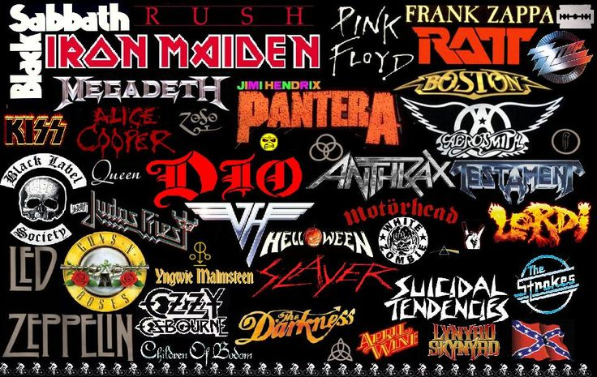
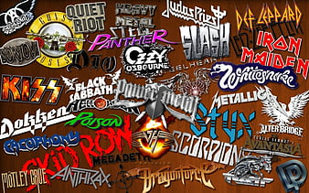
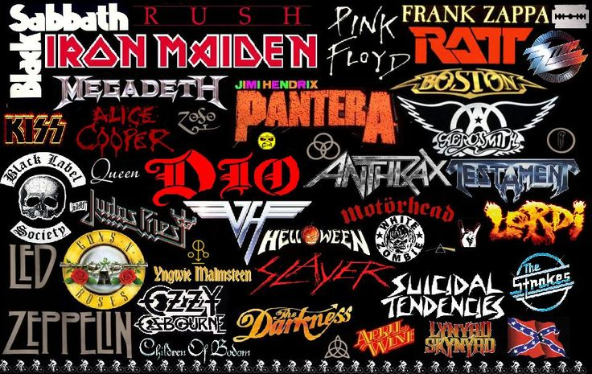
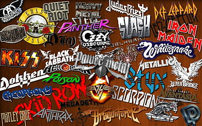
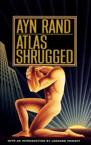
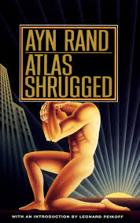

Hi,I'm Sai Sweta Dash
Master of FASHION Management
Post Graduate in ECONOMICS
I'm a FASHION ENTHUSIAST with an Analytical mind
Looking for my first work experience in fashion industry.
HOBBIES
I love to read Books."Jane Eyer" by Charlotte Bronte is my fovourite book.
I enjoy myself in drawing and painting.
I like to watch classic english movies and listening to hard-rock music.
"A Beautiful Mind" is one of my
favourite Movies.
EDUCATION
NIFT, Bhbaneswar — Master of Fashion Management
Pursuing second semester of Master of fashion management at NIFT Bhubaneswar
Progressing with a 8.8 SGPA in the first semester.
Utkal University, Bhubaneswar — Master in Economics
Post Graduate in Analytical & Applied Economics
CGPA 8.5
Specialized in Finance
Gangadhar Meher University, Sambalpur — BA Economics(Hons)
Percentage secured in Economics honors is 74.13%
Rank 5th
Electives studied are Indian Polity,Environmental Studies, Indian Society & Culture, Education

 




 
